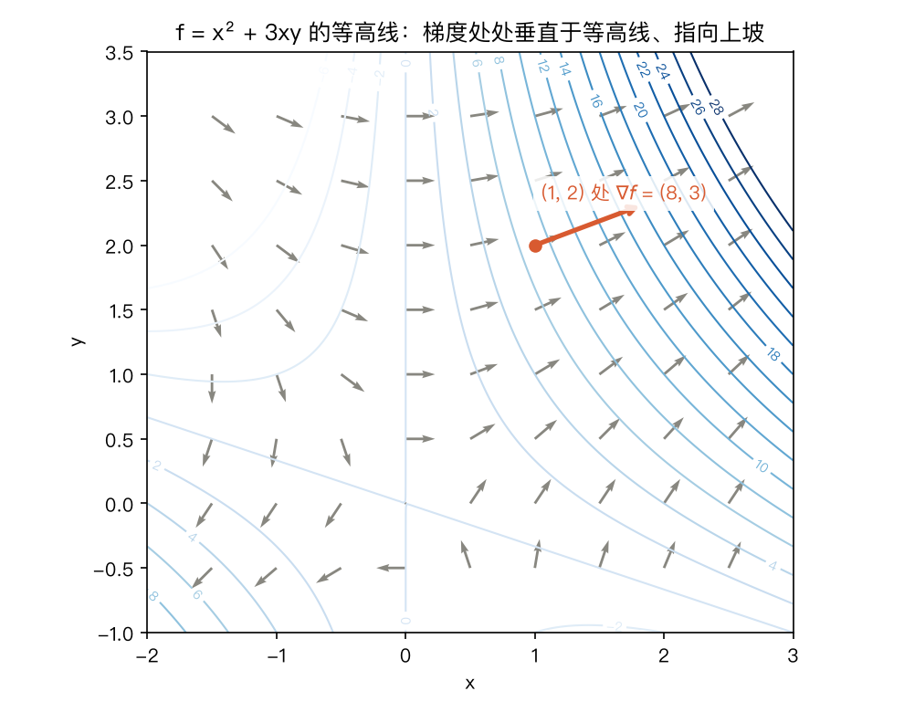
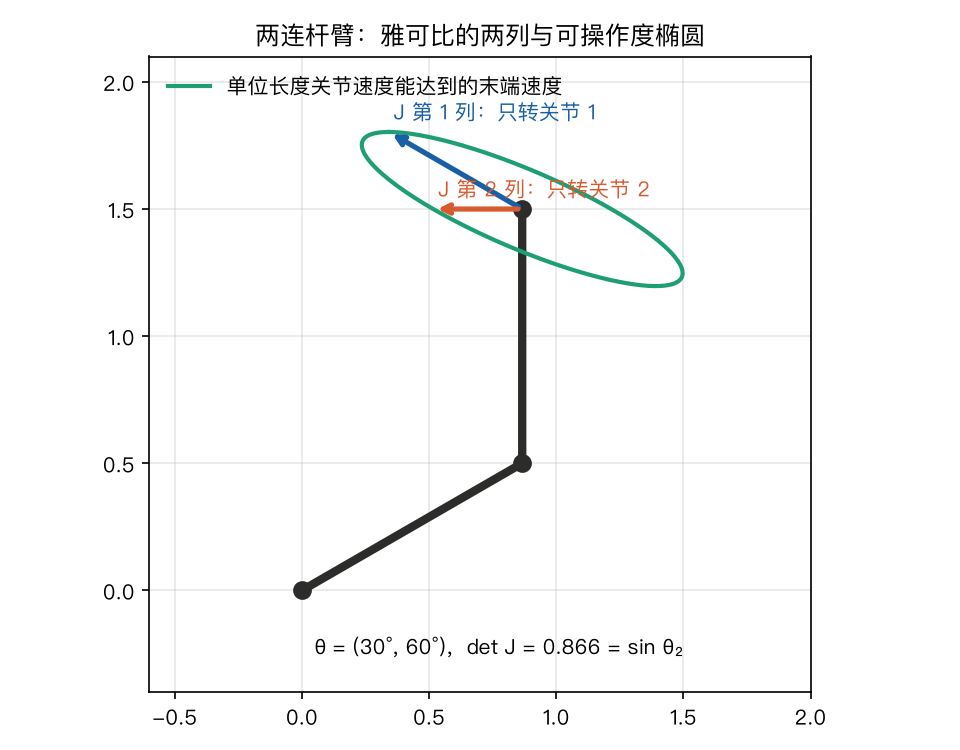
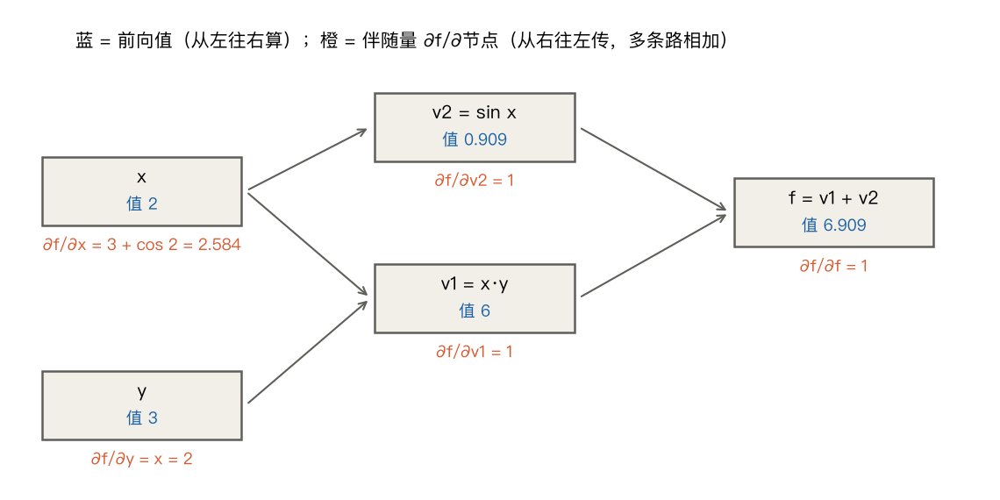
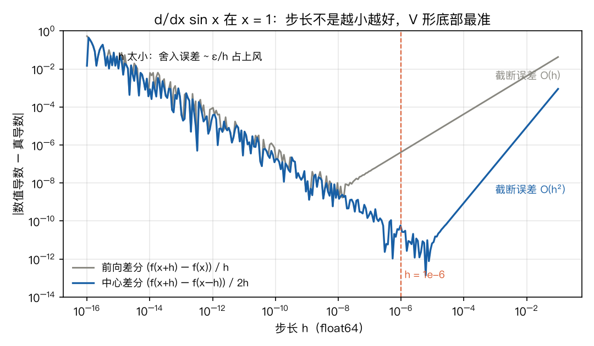

第 13 章 · 多元微积分与自动微分：从机械臂雅可比到反向传播
本地运行
git clone https://github.com/wikieden/math-and-eval-stats
cd math-and-eval-stats/code/notebooks
pip install jupyterlab torch numpy
jupyter lab ch13_calculus_autodiff.ipynb也可以下载后直接用 VS Code 打开 .ipynb 运行。需要 GPU 的章节在 Colab 里选「代码执行程序 → 更改运行时类型 → GPU」。
本章回答：梯度、雅可比到底是什么，和机械臂"关节转一点、末端动多少"有什么关系？链式法则为什么就是矩阵相乘？PyTorch 的
backward()在一张计算图上做了什么，为什么训练用反向模式？怎么检查自己算的导数对不对？
讲解日期：2026-11-23 · 上一章：第 12 章 线代二 · 下一章：第 14 章 无约束优化
对应原文：MML 第 5 章materials/text/books/mml-book.txt：§5.2 偏导与梯度 L8118 起（式 5.40 附近 L8145 "gradient … or the Jacobian"）、§5.2.2 链式法则 L8240、§5.3 向量值函数的梯度 L8326、§5.6 反向传播与自动微分 L8929；Baydin 等《Automatic Differentiation in Machine Learning: a Survey》§3.1 前向模式materials/text/papers/autodiff-survey-1502.05767.txtL469、§3.2 反向模式 L616–L630
本章缩写：AD = Automatic Differentiation（自动 / 微分）；VJP = Vector-Jacobian Product（向量 / 乘 / 雅可比）；JVP = Jacobian-Vector Product（雅可比 / 乘 / 向量）；IK = Inverse Kinematics（逆 / 运动学）；∇ 读作"nabla"，梯度算子；∂ 读作"偏"，偏导数。全部缩写见 附录 · 缩写与术语表
讲解
第一步：偏导与梯度：往哪走上升最快（2026-11-23）
类比：站在山坡上。 只往东走一步，高度变多少，是"对东的偏导"；只往北走一步，是"对北的偏导"。两个偏导拼成一个箭头，就是梯度，它指向最陡的上坡方向。
- \(\partial f/\partial x\)：读作"f 对 x 的偏导"，把 y 当常数求导。
- 在 (1, 2)：\(\nabla f = (8, 3)\)。沿 (8, 3) 方向走，f 上升最快；梯度下降就往反方向走（第 14 章）。
- MML 把梯度写成行向量（L8145），这是"雅可比的特例"。

图 13-1 · 灰箭头是各处梯度的方向（只画方向、长度统一），处处垂直于等高线、指向数值变大的一侧。橙箭头是 (1, 2) 处的梯度 (8, 3)。
一句话：梯度 = 所有偏导拼成的向量，指向上升最快的方向。
第二步：雅可比：多个输入、多个输出的"导数表"（2026-11-23）
类比：两连杆机械臂。 两个关节角 (θ₁, θ₂) 决定末端位置 (x, y)。雅可比是一张 2×2 的表：每个关节转一点，末端的 x、y 各动多少。
正运动学（连杆长 \(l_1 = l_2 = 1\)）：
- \(s_1 = \sin\theta_1\)，\(c_{12} = \cos(\theta_1+\theta_2)\)。
- 第 j 列：只转第 j 个关节时，末端速度的方向。
例子：θ = (30°, 60°)
| 量 | 值 |
|---|---|
| 末端位置 | (0.866, 1.5) |
| J | \(\begin{pmatrix}-1.5 & -1.0\\ 0.866 & 0\end{pmatrix}\) |
| det J | 0.866（= \(l_1 l_2\sin\theta_2\)） |
| θ₂ = 0（手臂伸直）时 det J | 0：奇异，末端沿手臂方向动不了 |

图 13-2 · θ = (30°, 60°) 时两列雅可比画成末端的速度箭头，以及单位关节速度能达到的末端速度椭圆（可操作度椭圆）。θ₂ 越接近 0，椭圆越扁，伸直时压成一条线。
一句话：雅可比 = 每个输入对每个输出的偏导排成的矩阵；行列式为 0 就是奇异位形。
第三步：链式法则就是雅可比相乘（2026-11-23）
类比：汇率换算。 人民币 → 美元 → 日元，总汇率是两个汇率相乘。函数套函数，导数也是一层层相乘。
\(h(\mathbf{x}) = g(f(\mathbf{x}))\) 时：
（MML §5.2.2，L8240 起；§5.3 推广到向量值函数）
例子：关节速度 \(\dot\theta = (0.1, -0.2)\) rad/s，末端速度 \(\mathbf{v} = J\dot\theta\)：
这是链式法则 \(\frac{d\mathbf{p}}{dt} = \frac{\partial\mathbf{p}}{\partial\theta}\frac{d\theta}{dt}\)。反过来，想让末端走速度 \(\mathbf{v}\)，就解 \(J\dot\theta = \mathbf{v}\)：这是速度级逆运动学，J 奇异时解不出来（第 12 章伪逆、第 15 章 QP）。
深网络也是一样：每层一个雅可比，整个网络的雅可比是它们的连乘。连乘太多会爆炸或消失（《机器人运控与强化学习》第 10 章 的 BPTT 就卡在这里）。
一句话：函数套函数，雅可比相乘；关节速度乘雅可比就是末端速度。
第四步：自动微分：前向模式与反向模式（2026-11-23）
类比：查快递路线。 前向模式像从发货点出发，沿每条路往前推"影响多大"；反向模式像从收件点出发，往回推"每个中转站对结果贡献多少"。只有一个收件点（一个 loss）时，往回推一次就得到所有发货点（所有参数）的导数。
把计算拆成一张图，每个节点只做一个简单运算。例子 \(f = x\cdot y + \sin x\)，在 x = 2、y = 3：
| 节点 | 前向值 | 局部导数 |
|---|---|---|
| \(v_1 = x\cdot y\) | 6 | \(\partial v_1/\partial x = y = 3\)，\(\partial v_1/\partial y = x = 2\) |
| \(v_2 = \sin x\) | 0.9093 | \(\partial v_2/\partial x = \cos x = -0.4161\) |
| \(f = v_1 + v_2\) | 6.9093 | 1、1 |
反向模式（Baydin §3.2，L616–L630：给每个中间量配一个"伴随量" adjoint \(\bar v = \partial f/\partial v\)）：
- \(\bar f = 1\)。
- \(\bar v_1 = \bar f \cdot 1 = 1\)，\(\bar v_2 = 1\)。
- \(\bar x = \bar v_1 \cdot y + \bar v_2\cdot\cos x = 3 - 0.4161 = 2.5839\)；\(\bar y = \bar v_1 \cdot x = 2\)。
x 有两条路通到 f，两条路的贡献相加。
| 前向模式（JVP） | 反向模式（VJP） | |
|---|---|---|
| 一次能算 | \(J\mathbf{v}\)：一个输入方向的影响 | \(\mathbf{u}^\top J\)：一个输出对所有输入的梯度 |
| 适合 | 输入少、输出多（如 2 个关节 → 末端 6 维） | 输出少、输入多（一个 loss、上亿参数） |
| 代价 | 每个输入方向一遍 | 每个输出一遍，但要存前向的中间值（显存） |

图 13-3 · f = x·y + sin x 的计算图。蓝色是前向值，橙色是反向传回的伴随量；x 的伴随量是两条路之和。
一句话：自动微分把链式法则按计算图机械地执行；一个 loss 对很多参数求导用反向模式，代价约等于再跑一遍前向。
第五步：怎么检查导数对不对（2026-11-23）
手推雅可比、手写反向传播都容易错。标准做法是和中心差分比：
- \(\mathbf{e}_i\)：第 i 维是 1、其余为 0 的向量；h 取 1e-6 左右（float64）。
- 误差是 \(O(h^2)\)；h 太小会被浮点舍入误差淹没（第 22 章）。
例子：两连杆雅可比的解析式和中心差分，最大误差 8.2e-11。
场景代码：真实项目里，雅可比和梯度检查都让 PyTorch 来做：
import torch
from torch.autograd.functional import jacobian
from torch.autograd import gradcheck
def fk(theta): # 两连杆正运动学（第二步）
t1, t2 = theta[0], theta[1]
return torch.stack([torch.cos(t1) + torch.cos(t1 + t2), torch.sin(t1) + torch.sin(t1 + t2)])
theta = torch.deg2rad(torch.tensor([30.0, 60.0], dtype=torch.float64))
J = jacobian(fk, theta) # 自动微分算出 2×2 雅可比 = [[-1.5, -1.0], [0.866, 0]]
v = J @ torch.tensor([0.1, -0.2], dtype=torch.float64) # 第三步：末端速度
theta.requires_grad_(True)
assert gradcheck(fk, (theta,)) # 第五步：和中心差分对比，必须用 float64
补基础：《PyTorch 从里到外》第 4 章 Autograd 讲了反向图在 PyTorch 里怎么存、怎么执行；《机器人软硬件架构》第 2 章 运动学 讲了机械臂的正逆运动学。

图 13-4 · 用差分算 sin x 在 x = 1 的导数。h 大时误差来自截断（前向差分 O(h)，中心差分 O(h²)）；h 太小时浮点舍入误差按 ε/h 变大。中心差分在 h ≈ 1e-6 附近最准，误差约 1e-11。
一句话：自己写的导数，一律用中心差分（gradcheck）在 float64 下对一遍。
动画演示：拖关节角，看雅可比和奇异位形

可交互版：animations/13-jacobian-2link.html（滑块：θ₁、θ₂）
怎么看： 1. 手臂按 θ₂ 从 150° 慢慢转到 0° 播放。末端画两支箭头：雅可比的两列（第二步）。 2. 椭圆是"所有单位关节速度能达到的末端速度"（\(J\dot\theta\)，\(\|\dot\theta\| = 1\)，第三步）。 3. 下方显示 det J。θ₂ → 0 时两支箭头趋于共线，椭圆压扁，det J → 0：手臂伸直，沿手臂方向动不了。 4. 自己拖 θ₁：椭圆形状不变，只是整体转动；det J 只跟 θ₂ 有关。
练习与作答记录
题 1（第一步）：\(f(x, y) = x^2 y + e^y\)，求梯度，并算出在 (1, 0) 处的值。
作答：（待作答）
题 2（第二、三步）：两连杆臂 \(l_1 = l_2 = 1\)，θ = (0°, 90°)。（a）末端位置；（b）雅可比；（c）关节速度 (0.1, 0.1) 时末端速度。
作答：（待作答）
题 3（第四步）：对 \(f = (x + y)\cdot x\) 画计算图，在 x = 1、y = 2 处用反向模式手算 ∂f/∂x 和 ∂f/∂y。一个有 7B 参数、1 个 loss 的模型，为什么用反向模式而不是前向模式？
作答：（待作答）
口诀
偏导拼成梯度，指向最陡上坡；
雅可比是导数表，行列为零就奇异；
链式法则矩阵乘，关节速度乘出末端；
一个 loss 反向推，求导记得差分核。
本章复习卡片
ST19–ST22（必须记住的公式和概念）。练习做完后，按答错、卡住的地方补上。
附录 · 延伸阅读
留给以后深入学习用，不影响本章主线。★ 是建议先读的。
推荐阅读
| 读什么 | 读哪里 | 读它为了什么 |
|---|---|---|
| ★ MML 第 5 章 | §5.2–5.3 L8118–L8720；§5.6 L8929–L9254 | 梯度、雅可比、矩阵求导、反向传播的正式推导 |
| ★ Baydin 等自动微分综述 | §3.1 L469 起、§3.2 L616 起 | 前向 / 反向模式的执行过程和复杂度 |
| Modern Robotics（Lynch & Park）第 5 章 | robot-system-architecture/materials/books/modern-robotics-lynch-park.pdf |
空间雅可比、物体雅可比、奇异性与可操作度 |
| Matrix Cookbook | 第 2 节 Derivatives | 查矩阵求导公式 |
| 《PyTorch 从里到外》第 4 章 | 全章 | autograd 在框架里的实现 |
数学原理
- 全微分：\(df = \nabla f \cdot d\mathbf{x}\)，梯度是"一阶近似里的系数"；第 22 章的线性化用同一个式子。
- 可操作度（manipulability）：\(\sqrt{\det(JJ^\top)}\)，椭圆面积的度量；为 0 即奇异。
- 反向模式的代价：一次反向约为前向的 2–3 倍计算量，但要存全部中间值；激活重计算（checkpointing）用计算换显存。
- VJP 组合：\(\mathbf{u}^\top J_g J_f = (\mathbf{u}^\top J_g) J_f\)，从左往右乘，每步都是向量乘矩阵，从不显式构造完整雅可比。
公式清单
| 公式 | 意思 |
|---|---|
| \(\nabla f = (\partial f/\partial x_1, \dots, \partial f/\partial x_n)\) | 梯度 |
| \(J_{ij} = \partial f_i/\partial x_j\) | 雅可比 |
| \(J_{g\circ f} = J_g J_f\) | 链式法则 |
| \(\mathbf{v} = J\dot\theta\) | 关节速度 → 末端速度 |
| \(\det J = l_1 l_2\sin\theta_2\) | 两连杆的奇异条件 |
| \(\frac{f(x+h)-f(x-h)}{2h}\) | 中心差分 |
代码对照：把本章的数字用代码算一遍
Python + NumPy。代码在仓库本地
math-and-eval-stats/solutions/chapter-code/ch13_calculus_autodiff.py，配套测试tests/test_ch13.py：
bash cd math-and-eval-stats/solutions/chapter-code uv run python ch13_calculus_autodiff.py uv run pytest tests/test_ch13.py
讲义 ↔ 代码：
| 讲义 | 公式 | 写法 | 跑出来 |
|---|---|---|---|
| 第一步 | 梯度 | grad_f(1, 2) |
[8, 3] |
| 第二步 | 正运动学、雅可比 | fk_2link、jacobian_2link(30°, 60°) |
(0.866, 1.5)；[[−1.5, −1.0], [0.866, 0]]，det 0.866 |
| 第三步 | \(J\dot\theta\) | J @ [0.1, -0.2] |
(0.05, 0.0866) |
| 第四步 | 反向模式 | Var、backward() |
f = 6.9093，∂f/∂x = 2.5839，∂f/∂y = 2 |
| 第五步 | 中心差分 | numeric_jacobian(fk_2link, θ) |
最大误差 8.2e-11 |
关键几行：
def __mul__(self, other): # 乘法节点：记下两个父节点和各自的局部导数
return Var(self.value * other.value, ((self, other.value), (other, self.value)))
for v in reversed(order): # 按拓扑序倒着走（从 loss 往输入）
for p, local in v.parents:
p.grad += v.grad * local # 伴随量 = 上游伴随 × 局部导数；多条路径相加
代码里才看得到的 3 件事：
- 反向传播前必须拓扑排序：一个节点要等所有下游的伴随量收齐才能往上传；直接递归会在共享节点上重复计算。
p.grad +=而不是=：x 同时进了乘法和 sin，两条路的贡献相加。PyTorch 的梯度默认也累加，所以每步训练前要zero_grad()。- 中心差分在 float32 下 h 取 1e-6 会被舍入误差淹没，
gradcheck要求 float64。
自己改一改（不影响练习答案）：
- 给
Var加一个exp方法（局部导数是它自己），用 f = x·exp(y) 测一下。 - 把 θ₂ 从 60° 逐步减到 1°，打印 det J，看它怎么趋于 0。
- 对照 notebook，把
numeric_jacobian的 h 从 1e-2 扫到 1e-12，画出误差曲线（先降后升）。